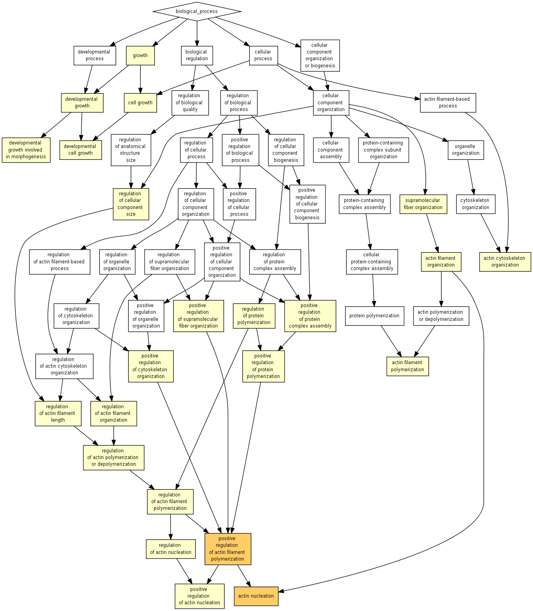

| > 10-3 | 10-3 to 10-5 | 10-5 to 10-7 | 10-7 to 10-9 | < 10-9 |

| GO term | Description | P-value | FDR q-value | Enrichment (N, B, n, b) | Genes |
| GO:0030838 | positive regulation of actin filament polymerization | 6.25E-6 | 9.55E-2 | 32.77 (18319,86,26,4) |
[+] Show genes |
| GO:0045010 | actin nucleation | 9.05E-6 | 6.91E-2 | 72.89 (18319,29,26,3) |
[+] Show genes |
| GO:0007015 | actin filament organization | 1.36E-5 | 6.95E-2 | 15.80 (18319,223,26,5) |
[+] Show genes |
| GO:0032273 | positive regulation of protein polymerization | 2.12E-5 | 8.09E-2 | 24.09 (18319,117,26,4) |
[+] Show genes |
| GO:0030833 | regulation of actin filament polymerization | 6.87E-5 | 2.1E-1 | 17.84 (18319,158,26,4) |
[+] Show genes |
| GO:0008064 | regulation of actin polymerization or depolymerization | 1.07E-4 | 2.72E-1 | 15.92 (18319,177,26,4) |
[+] Show genes |
| GO:0030832 | regulation of actin filament length | 1.09E-4 | 2.38E-1 | 15.83 (18319,178,26,4) |
[+] Show genes |
| GO:1902905 | positive regulation of supramolecular fiber organization | 1.16E-4 | 2.22E-1 | 15.57 (18319,181,26,4) |
[+] Show genes |
| GO:0051495 | positive regulation of cytoskeleton organization | 1.71E-4 | 2.9E-1 | 14.09 (18319,200,26,4) |
[+] Show genes |
| GO:0097435 | supramolecular fiber organization | 1.89E-4 | 2.89E-1 | 9.08 (18319,388,26,5) |
[+] Show genes |
| GO:0032271 | regulation of protein polymerization | 1.95E-4 | 2.71E-1 | 13.62 (18319,207,26,4) |
[+] Show genes |
| GO:0048588 | developmental cell growth | 2.16E-4 | 2.75E-1 | 25.47 (18319,83,26,3) |
[+] Show genes |
| GO:0016049 | cell growth | 2.32E-4 | 2.73E-1 | 24.87 (18319,85,26,3) |
[+] Show genes |
| GO:0051127 | positive regulation of actin nucleation | 2.6E-4 | 2.84E-1 | 82.89 (18319,17,26,2) |
[+] Show genes |
| GO:0031334 | positive regulation of protein complex assembly | 3.32E-4 | 3.38E-1 | 11.84 (18319,238,26,4) |
[+] Show genes |
| GO:0060560 | developmental growth involved in morphogenesis | 3.75E-4 | 3.58E-1 | 21.14 (18319,100,26,3) |
[+] Show genes |
| GO:0110053 | regulation of actin filament organization | 4E-4 | 3.59E-1 | 11.27 (18319,250,26,4) |
[+] Show genes |
| GO:0032535 | regulation of cellular component size | 5.05E-4 | 4.29E-1 | 10.60 (18319,266,26,4) |
[+] Show genes |
| GO:0048589 | developmental growth | 6.29E-4 | 5.06E-1 | 9.99 (18319,282,26,4) |
[+] Show genes |
| GO:0030041 | actin filament polymerization | 6.65E-4 | 5.08E-1 | 52.19 (18319,27,26,2) |
[+] Show genes |
| GO:0040007 | growth | 6.9E-4 | 5.02E-1 | 9.75 (18319,289,26,4) |
[+] Show genes |
| GO:0051125 | regulation of actin nucleation | 7.16E-4 | 4.97E-1 | 50.33 (18319,28,26,2) |
[+] Show genes |
| GO:0030036 | actin cytoskeleton organization | 9.4E-4 | 6.24E-1 | 8.98 (18319,314,26,4) |
[+] Show genes |
Species used: Homo sapiens
The system has recognized 19375 genes out of 20107 gene terms entered by the user.
19375 genes were recognized by gene symbol and 0 genes by other gene IDs .
198 duplicate genes were removed (keeping the highest ranking instance of each gene) leaving a total of 19177 genes.
Only 18319 of these genes are associated with a GO term.
The GOrilla database is periodically updated using the GO database and other sources.
The GOrilla database was last updated on Jun 23, 2018
This results page will be available on this site for one month from now (until Jul 25, 2018 ). You can bookmark this page and come back to it later.